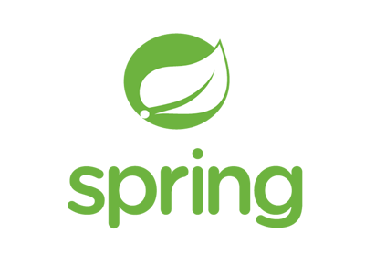
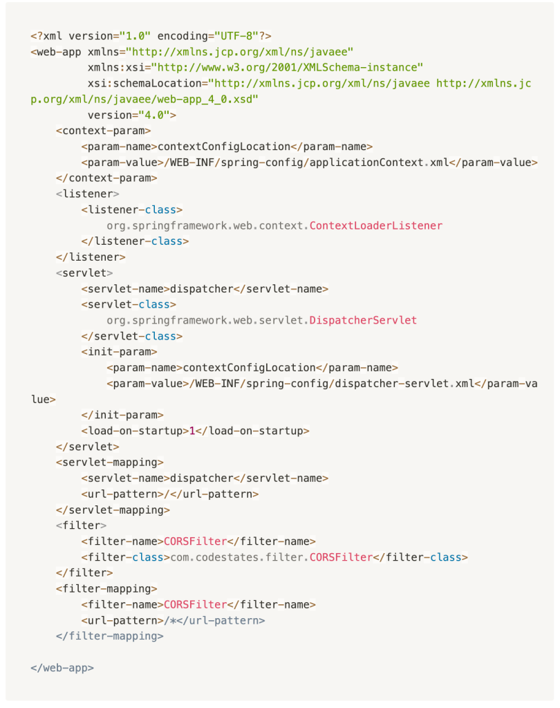
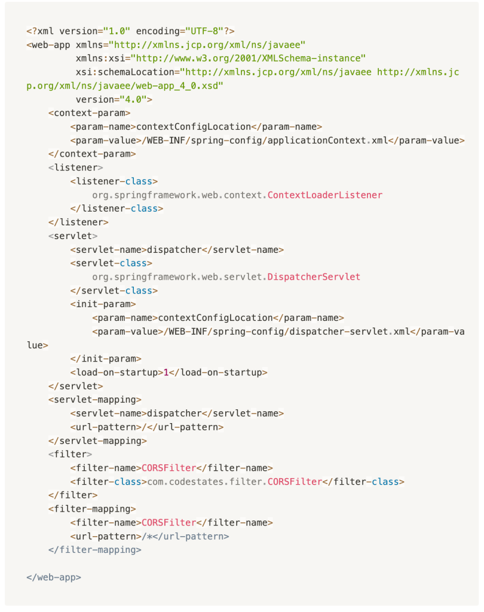
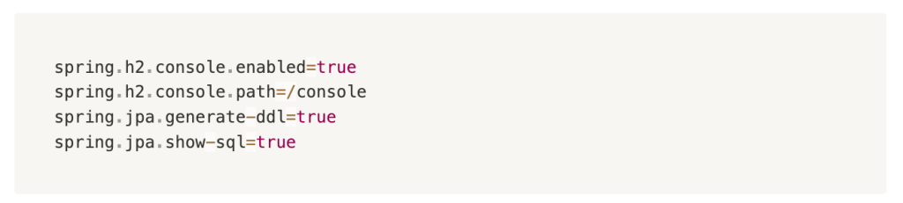
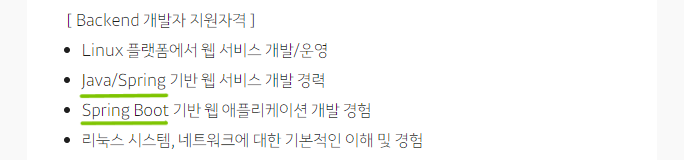
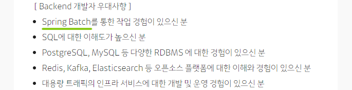

Interested Technology

Java 기반의 애플리케이션 프레임워크
스프링은 Java 백엔드의 핵심 기술로서,
자바 엔터프라이즈 애플리케이션 개발에 사용되는 오픈소스 경량급 애플리케이션
프레임워크입니다.
Spring은 다양한 기능과 모듈을 제공하여 개발자가 더 쉽고 효율적으로 애플리케이션을 개발할 수 있도록 돕습니다.
주요 기능 및 특징
IoC
(Inversion of Control)
"제어의 역전"이라는 뜻으로, 소프트웨어 컴포넌트 간의 의존성 관리를 개선하는 디자인 패턴
DI
(Dependency Injection)
의존성 객체를 개발자가 생성하지 않고 클래스를 Bean으로 등록해놓으면 Bean으로 등록된 객체를 프레임워크가 찾아서 알아서 주입해주는 기술이다.
이를 통해 모듈간의 결합도를 낮출 수 있다.
AOP
(Aspect Oriented Programming)
"관점 지향 프로그래밍"이라는 뜻으로, 프로그램의 핵심 로직 외에 부가적인 횡단 관심사(Cross-cutting Concerns)를 모듈화하는 개념
PSA
(Portable Service Abstraction)
"이식 가능한 서비스 추상화"라는 뜻으로, 서로 다른 기술 스택을 사용하는 여러 환경에서 공통된 API를 사용하여 개발을 간소화하는 개념
POJO
(Plan Old Java Object)
"평범한 옛날 자바 객체"라는 뜻으로, 간단하고 가벼운 자바 객체를 말한다. POJO는 특정한 인터페이스나 프레임워크에 종속되지 않고,
자바의 기본적인 객체 지향 프로그래밍 원칙을 따르는 객체를 의미한다.
MVC 디자인 패턴
MVC는 Model, View, Controller의 약자로,
클라이언트와 상호작용하는 소프트웨어를 설계함에 있어 세가지 요소로 나누어 설계하는 것을 말합니다.
Model
Model은 애플리케이션의 정보, 데이터의 가공을 책임지며 데이터베이스와 상호작용하여 비즈니스 로직을 처리하는 모듈. 즉, 컴포넌트를 말한다.
Model은 아래와 같은 규칙을 가지고 있다.
사용자가 이용하려는 모든 데이터를 가지고 있어야 한다.
View 또는 Controller에 대해 어떤 정보도 알 수 없어야 한다.
변경이 일어났을 때 처리 방법을 구현해야 한다.
모델은 재사용이 가능해야 하며 다른 인터페이스에서도 변하지 않아야 한다.
View
View는 클라이언트 단에서 보여지는 결과화면을 반환하는 모듈. 즉, 사용자 인터페이스 요소를 말하며 아래와 같은 규칙들을 가지고 있다.
Model이 가지고 있는 데이터를 저장하면 안된다.
→ Model이나 Controller에 대한 정보를 알면 안된다.
데이터를 받아 단순히 화면에 표시해주는 역할만 가진다.
재사용이 가능하게끔 설계를 해야 하며 다른 정보들을 표현할 때 쉽게 설계해야 한다.
Controller
Controller는 client로부터 request가 들어왔을 때 그 입력을 처리하고 어떤 로직을 실행시킬 것인지 Model과 View를 연결해주며 제어하는 모듈을 말한다.
Controller는 아래와 같은 규칙들을 가지고 있다.
Model 또는 View에 대한 정보를 알아야 한다.
Model 또는 View의 변경을 인지하여 대처를 해야한다.
모델이나 뷰의 변경 통지를 받으면 이를 해석해서 각각의 구성 요소에게 통지를 해야 한다.
애플리케이션의 메인 로직을 담당한다.
스프링은 기존 기술의 복잡성을 크게 줄인 프레임워크이지만,
그럼에도 불구하고 스프링을 사용하기 위해서는 여러 가지의 사항들을 설정해주어야 합니다.
 spring boot의 등장

스프링으로 개발을 할 때에 설정해주어야 하는 설정 정보
spring boot의 등장

스프링으로 개발을 할 때에 설정해주어야 하는 설정 정보
→ 한 눈에 보기 어렵고 매우 복잡함

스프링 부트를 사용하여 위의 복잡한 설정 정보를 간략하게 줄일 수 있음
스프링 부트는 스프링으로 애플리케이션을 만들 때에 필요한 설정을 간편하게 처리해주는 별도의 프레임워크입니다.
스프링 부트를 사용하면 기존에 어려운 초기 설정에 쏟아야 했을 시간과 노력을 절약하여 비즈니스 로직을 구현하는데에 집중할 수 있습니다.
이외의 몇가지 장점
✔️ 자체적인 웹 서버를 내장하고 있어, 빠르고 간편하게 배포를 진행할 수 있습니다.
✔️ 독립적으로 실행 가능한 Jar 파일로 프로젝트를 빌드할 수 있어, 클라우드 서비스 및 도커와 같은 가상화 환경에 빠르게 배포할 수 있습니다.
Company
저의 꿈의 직장, 카카오에 대해 소개하려고 합니다.
기술과 사람으로 더 나은 세상을 만듭니다.
대한민국의 종합 IT 기업.
모태이자 핵심 사업인 카카오톡을 기반으로 플랫폼, 운송업, 컨텐츠 분야에서 사업을 확장해 나가며 국내 최대 규모의 IT 기업으로 성장했습니다.
각 서비스를 클릭해 해당 페이지로 이동해보세요 !
일상의 혁신을 위한 디지털 전환
플랫폼을 통해 이용자 및 파트너가 보다 편리하고 효율적으로
디지털 기술의 혜택을 누릴 수 있도록 디지털 전환을 돕습니다.
IP-IT 결합을 통한 글로벌 문화 생태계 구축
콘텐츠 IP와 플랫폼의 시너지를 바탕으로
글로벌 시장 진출과 경쟁력 강화를 추구합니다.
AI ⋅ 헬스케어 중심의 뉴 이니셔티브
미래 성장동력을 발굴하고 육성하기 위해, AI와 헬스케어 분야에서 기술과 서비스를 개발합니다.
미래 비즈니스 파트너 발굴과 스타트업 생태계 기여를 위한 투자도 함께합니다.
카카오는 언제 어디서나 우리 일상 속에서 편리함을 책임집니다.
카카오는 더 나은 세상을 만들기 위해 꾸준히 노력합니다.
# 전 세계 사용성 1위, JAVA
세계적인 대부분의 IT 기업들은 JAVA를 개발 공식언어로 사용하고 있습니다.
포춘 500대 기업 중 90%는 백엔드 개발 언어로 자바를 채택할 정도!
한국에서도 네이버, 카카오,
배달의민족 등 수많은 IT 기업에서 JAVA 개발자를 필요로 하고 있답니다.
카카오 역시 Java 백엔드의 핵심 기술, Spring을 사용하고 있습니다.


참고. 카카오 인프라 서비스 플랫폼 Backend 개발자 모집 공고
카카오는 다양한 서비스를 통해 사용자들의 생활을 편리하게 만들어주는 동시에 디지털 산업에 혁신을 주도하고 있습니다.
최근에는 인공지능, 자율주행, 블록체인 등의 신기술에도 주목하고 있어, 미래에 더욱 다양하고 혁신적인 서비스가 기대되는 기업입니다.